See README.md for reproduction, scope and limitations. All live paired accuracy intervals include zero; offline timeout qualifications are retained.
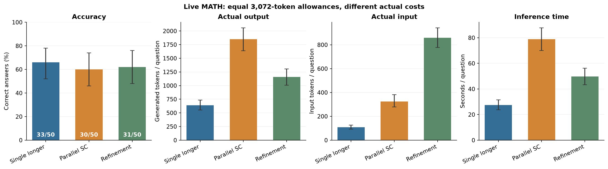
Same fixed 50 MATH evaluation questions and original Qwen2.5-3B-Instruct revision; FP16 T4, batch 1. Bars are question means, whiskers pointwise 95% question-bootstrap intervals (1,000 paired draws). Allowances are 3,072 output tokens per strategy/question; early EOS leaves unused allowance. Parallel SC uses three independent calls generated serially: runtime is summed inference, not concurrent latency. Shared initial input/output tokens and time are charged to both parallel and refinement. Input counts include the complete revision prompt. Accuracy-difference intervals, rather than overlap of individual intervals, are in paired_differences.csv; all three paired accuracy intervals include zero.
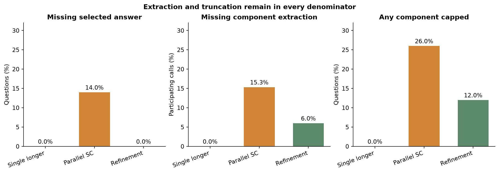
Missing means absent, empty, or unclosed last literal boxed extraction; no numeric fallback. Selected-answer rate uses 50 questions per strategy. Component extraction rate uses 50 long, 150 parallel, or 100 refinement-participating calls; the initial call belongs to both parallel and refinement. Any-component-capped rate uses 50 questions and counts questions with at least one token-cap termination (EOS at the cap is not truncation). All 24 uniquely capped calls are parallel candidates; six are shared initials. None of the 50 longer or 50 revision calls are capped. No missing/capped response is excluded or regenerated.
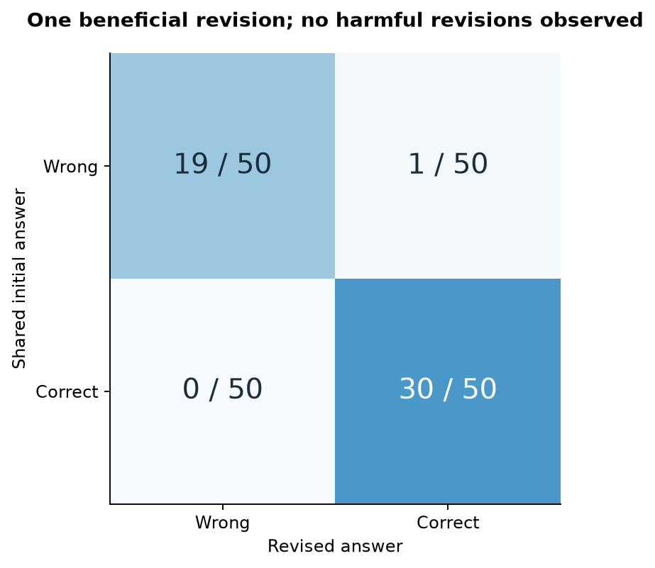
All 50 questions, comparing the first parallel response (shared initial) with the unconditional final revision. Wrong-to-correct: 1/20 initially wrong; correct-to-wrong: 0/30 initially correct. Missing initial extractions count as wrong. The sole beneficial case, test:2688, began with a capped initial response with no extracted answer; revision produced -1, also obtained by the longer response. This is recovery from an incomplete answer, not evidence of correcting an explicitly wrong extracted mathematical answer. Initial accuracy 30/50; revised accuracy 31/50. No harmful category examples exist in this sample; that does not establish safety of revision in general.
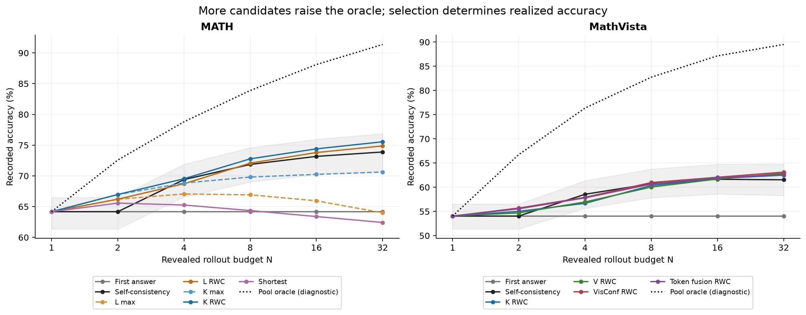
800 held-out questions per dataset; 10 nested saved orders averaged within each question. Oracle: at least one recorded correct answer in N candidates, not an implementable method. First answer consumes one candidate at every displayed N. Shading: pointwise 95% question bootstrap for SC only; all method intervals in CSV. Recorded bounded-scorer labels; MATH comparison timeouts on test:4928.
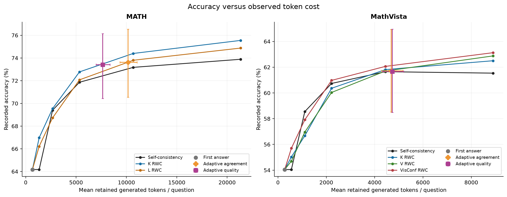
Fixed curves connect observed N=1,2,4,8,16,32 points as a visual guide, not interpolated evidence. Adaptive thresholds frozen using development data. Bars: separate pointwise 95% question-bootstrap accuracy and mean-cost intervals, not joint regions. Offline retained-token cost excludes prompt processing, scoring and attention collection; it is a compute proxy, not wall time. See adaptive_cost_comparisons in analysis.json for bracketing observed SC budgets.
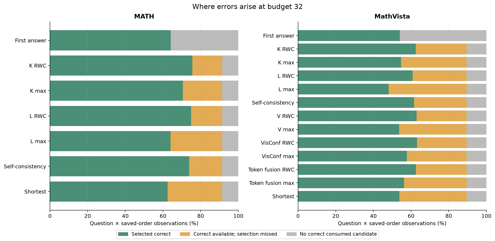
All percentages average ten orders within each of 800 questions. Categories partition consumed-candidate outcomes. First answer consumes only one, so its available-correct fraction equals its accuracy. Other methods consume all32. Labels use the frozen bounded scorer, including the reported MATH timeout case.
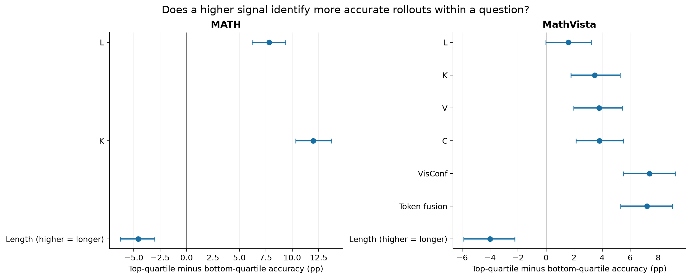
N32 signals computed within each question, using equal fractional weights at tied quartile boundaries. Plot macro-averages800 question gaps. Error bars: pointwise 95% question bootstrap. Higher length means longer response, not the shortest-response selector. Associations do not establish causation; Spearman correctness/length associations and undefined counts are in signal_associations.csv.
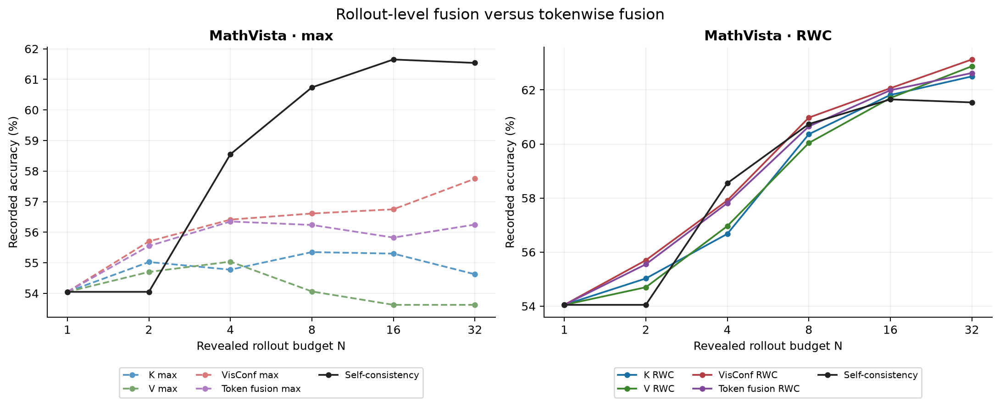
VisConf = mean(c) × mean(v); token fusion = mean(c × v); their difference is population covariance(c,v). Confidence c uses Q05/Q95 from the current revealed candidate prefix only and is recalibrated for every N/order. See paired_accuracy_differences.csv for paired fusion contrasts with pointwise95% intervals. All results800 held-out MathVista questions, ten orders each.
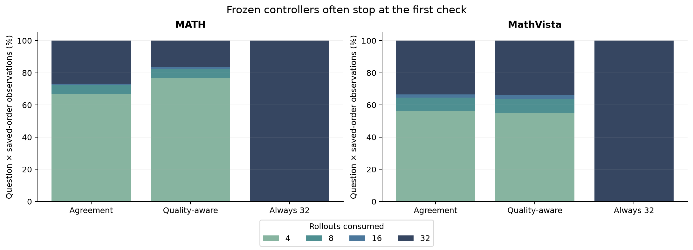
Stopping counts over8000 question-order observations per dataset. Policies may check after4,8,16; otherwise32. MATH agreement tau=.625; quality tau=.5,gamma=0. MathVista agreement tau=.625; quality tau=.625,gamma=0. Chosen using development data only. Both output current self-consistency. Orders within a question are dependent; uncertainty elsewhere resamples questions.
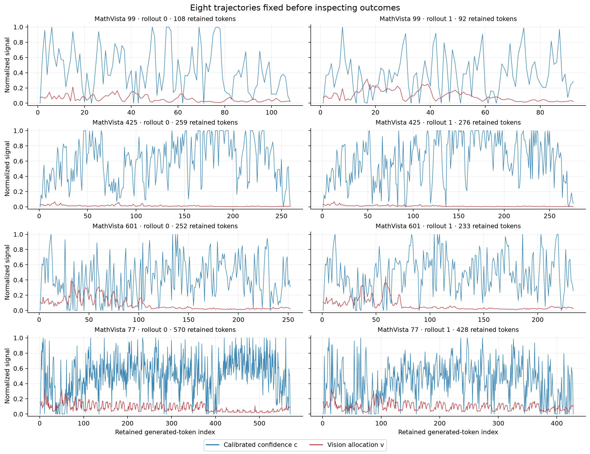
Rollouts0/1 from the first four saved MathVista evaluation IDs, selected before performance analysis. Full32 candidate-prefix calibration in the first saved order; no token smoothing/downsampling. v = image/(image+prompt_text+generated_text) attention. c and v share a0–1 scale but measure different quantities. Source tokens/raw KL and full arrays in fixed_trajectories.json/source export.
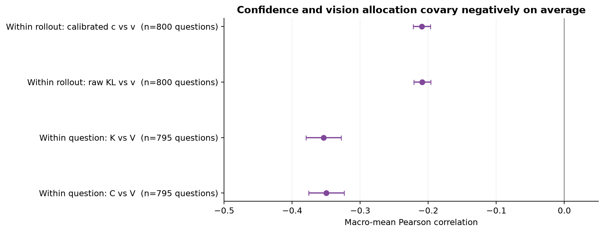
Within-rollout Pearson correlations first averaged over32 rollouts per question, then questions. Raw KL and prefix-calibrated confidence shown separately;25600 valid rollout correlations. Within-question K/C vsV correlations use32 rollout-level means;795 valid questions,5 undefined. Undefined correlations excluded, not set to0. Bars pointwise95% question bootstrap. Negative association is descriptive, not evidence that vision attention harms correctness.
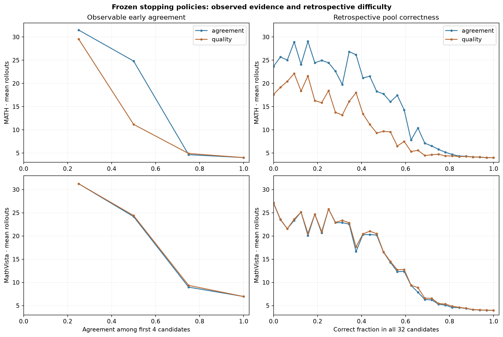
800 held-out questions per dataset, ten saved orders each. For each fixed family, points group question-order observations by the exact first-four leader agreement (left) or exact full-pool correct fraction (right); points are descriptive means, without intervals or minimum-count filtering. Full-pool correctness is retrospective only and never enters stopping. All saved per-question correct, cost, rollout, and early-error totals are exactly reproduced from saved observable states and the already-frozen policy, without symbolic regrading or tuning. Sparse groups may contain few questions; raw observations are saved. The earlier MATH test:4928 timeout limitation remains.
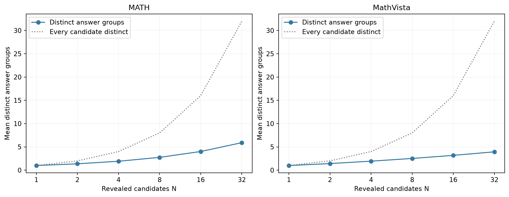
Mean distinct revealed answer groups over 800 held-out questions and ten nested saved orders per dataset; groups use the original frozen equivalence and prefix processing. Dotted line is the maximum N groups. The gap N minus observed groups counts repeated answer-group support, not duplicate reasoning text or useless computation. Missing answers share one group and remain included. This descriptive curve does not identify causal effects of vision or prove answer correctness.